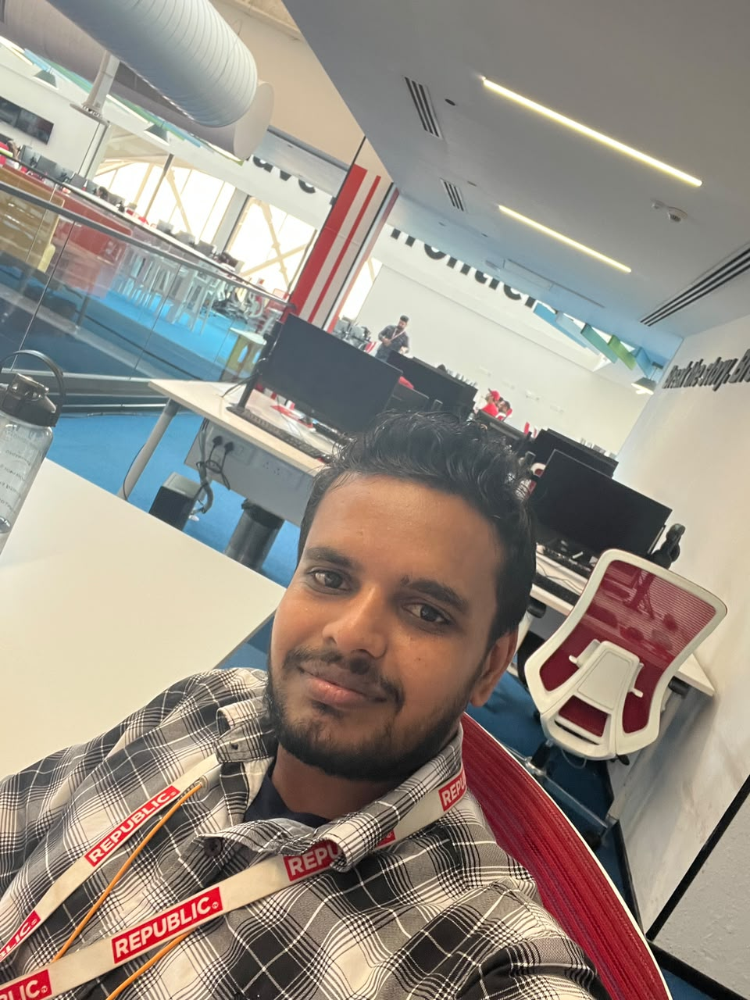

Multi-Cloud Infrastructure
Terraform-driven infrastructure across AWS, Azure and GCP with networking, compute, storage, databases and serverless services.
I design, automate and secure production-ready cloud platforms across AWS, Azure and GCP. My focus is Infrastructure as Code, Kubernetes, CI/CD, DevSecOps, MLOps and reliable cloud-native delivery.

From infrastructure provisioning to application delivery and observability, I work across the complete deployment lifecycle.
Terraform-driven infrastructure across AWS, Azure and GCP with networking, compute, storage, databases and serverless services.
End-to-end build, test, security scanning, deployment and rollback workflows using GitHub Actions, Azure DevOps, CodePipeline, Cloud Build and Argo CD.
Security and model delivery with IAM, Vault, Trivy, Snyk, SonarQube, Checkov, Falco, Kube-bench and production monitoring.